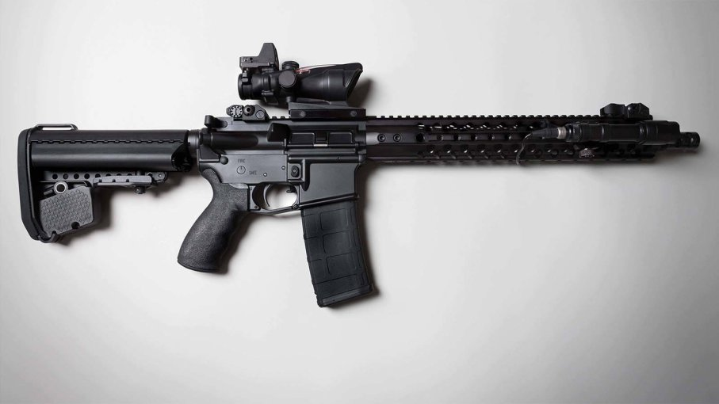
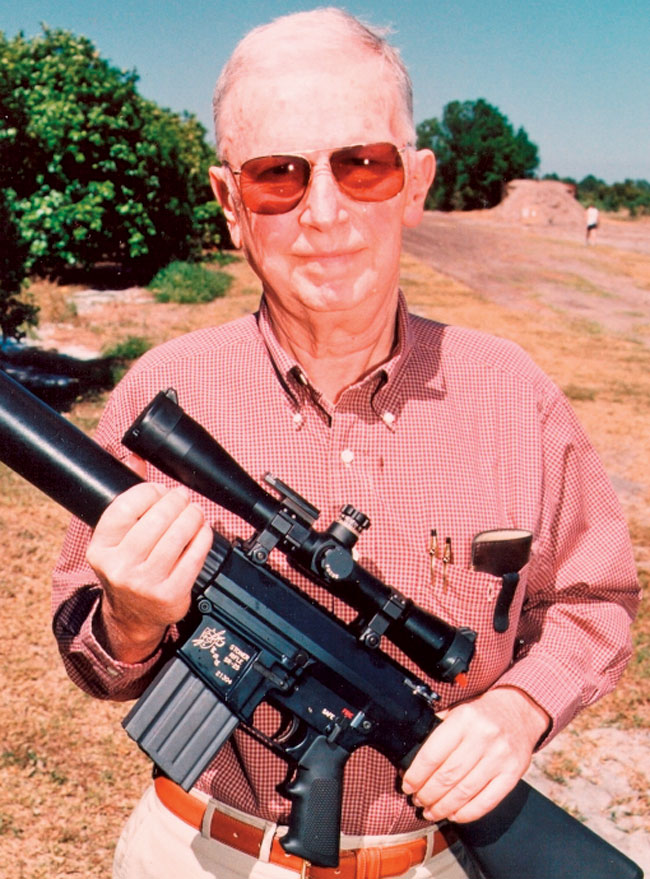

The ArmaLite AR-15 is a select-fire, air-cooled, gas-operated, magazine-fed assault rifle manufactured in the United States between 1959 and 1964, and adopted by the United States Armed Forces as the M16 rifle. Designed by American gun manufacturer ArmaLite in 1956, it was based on its AR-10 rifle. The ArmaLite AR-15 was designed to be a lightweight assault rifle and to fire a new high-velocity, lightweight, small-caliber cartridge to allow infantrymen to carry more ammunition.
In 1959, ArmaLite sold its rights to the AR-10 and AR-15 to Colt due to financial difficulties, and limitations in terms of manpower and production capacity. After modifications (most notably, the charging handle was re-located from under the carrying handle like AR-10 to the rear of the receiver), Colt rebranded it the Colt ArmaLite AR-15. Colt marketed the redesigned rifle to various military services around the world and it was subsequently adopted by the U.S. military as the M16 rifle, which went into production in March 1964.

Eugene Morrison Stoner (November 22, 1922 – April 24, 1997) was an American firearms designer who is most associated with the development of the ArmaLite AR-15 rifle that was adopted by the US military as the M16 rifle.
In late 1945 Stoner began working in the machine shop for Whittaker, an aircraft equipment company, and ultimately became a Design Engineer.
In 1954 he came to work as chief engineer for ArmaLite, a division of Fairchild Engine & Airplane Corporation. While at ArmaLite, he designed a series of prototype small arms, including the AR-3, AR-9, AR-11, AR-12, none of which saw significant production. Their only real success during this period was the AR-5 survival rifle, which was adopted by the United States Air Force.
In 1955, Stoner completed initial design work on the revolutionary ArmaLite AR-10, a lightweight (7.25 lbs.) select-fire infantry rifle in 7.62×51mm NATO caliber. The AR-10 was submitted for rifle evaluation trials to the US Army's Aberdeen Proving Ground late in 1956. In comparison with competing rifle designs previously submitted for evaluation, the AR-10 was smaller, easier to fire in automatic, and much lighter. However it arrived very late in the testing cycle, and the army rejected the AR-10 in favor of the more conventional T44, which became the M14. The AR-10's design was later licensed to the Dutch firm of Artillerie Inrichtingen, who produced the AR-10 until 1960 for sale to various military forces.